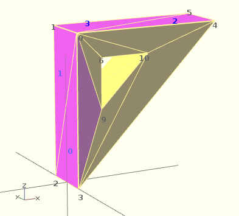

If you don't really understand "orientation", try to identify the mis-oriented pink faces and then invert the sequence of the references to the points vectors until you get it right. E.g. in the above example, the third triangle ([0,4,5]) was wrong and we fixed it as [4,0,5]. Remember that a face list is a circular list. In addition, you may select "Show Edges" from the "View Menu", print a screen capture and number both the points and the faces. In our example, the points are annotated in black and the faces in blue. Turn the object around and make a second copy from the back if needed. This way you can keep track.
Orientation is determined by clockwise circular indexing. This means that if you're looking at the triangle (in this case [4,0,5]) from the outside you'll see that the path is clockwise around the center of the face. The winding order [4,0,5] is clockwise and therefore good. The winding order [0,4,5] is counter-clockwise and therefore bad. Likewise, any other clockwise order of [4,0,5] works: [5,4,0] & [0,5,4] are good too. If you use the clockwise technique, you'll always have your faces outside (outside of OpenSCAD, other programs do use counter-clockwise as the outside though).
Think of it as a Left Hand Rule:
If you place your left hand on the face with your fingers curled in the direction of the order of the points, your thumb should point outward. If your thumb points inward, you need to reverse the winding order.

Polyhedron with badly oriented polygons
Succinct description of a 'Polyhedron'
* Points define all of the points/vertices in the shape. * Faces is a list of flat polygons that connect up the points/vertices.
Each point, in the point list, is defined with a 3-tuple x,y,z position specification. Points in the point list are automatically enumerated starting from zero for use in the faces list (0,1,2,3,... etc).
Each face, in the faces list, is defined by selecting 3 or more of the points (using the point order number) out of the point list.
e.g. faces=[ [0,1,2] ] defines a triangle from the first point (points are zero referenced) to the second point and then to the third point.
When looking at any face from the outside, the face must list all points in a clockwise order.
The point list of the polyhedron definition may have repetitions. When two or more points have the same coordinates they are considered the same polyhedron vertex. So, the following polyhedron:
points = [[ 0, 0, 0], [10, 0, 0], [ 0,10, 0],
[ 0, 0, 0], [10, 0, 0], [ 0,10, 0],
[ 0,10, 0], [10, 0, 0], [ 0, 0,10],
[ 0, 0, 0], [ 0, 0,10], [10, 0, 0],
[ 0, 0, 0], [ 0,10, 0], [ 0, 0,10]];
polyhedron(points, [[0,1,2], [3,4,5], [6,7,8], [9,10,11], [12,13,14]]);
define the same tetrahedron as:
points = [[0,0,0], [0,10,0], [10,0,0], [0,0,10]];
polyhedron(points, [[0,2,1], [0,1,3], [1,2,3], [0,3,2]]);
Created with the Personal Edition of HelpNDoc: News and information about help authoring tools and software